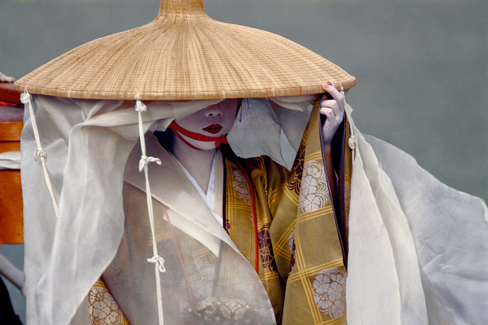
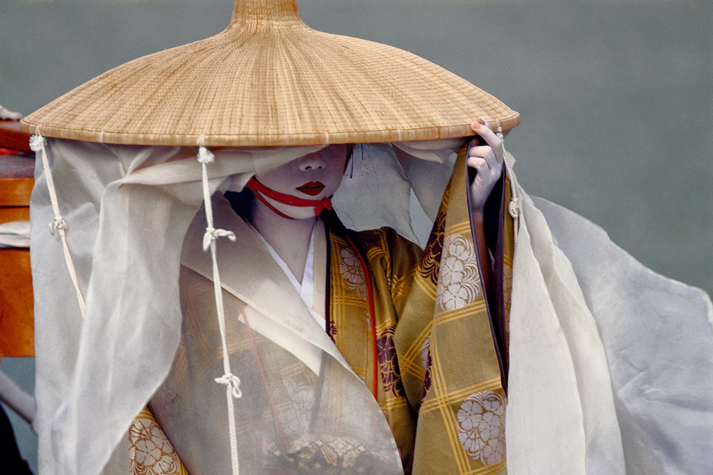
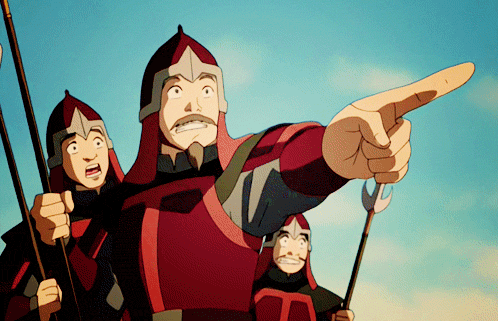
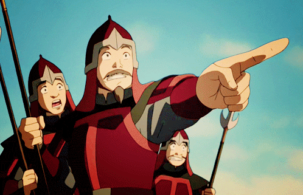

Location & Architecture
Images from Avatar
The Asian Inspiration
Fire Nation is a crescent-shaped tropical archipelago with many volcanoes, just like Japan. The Fire Colonies established in the Earth Kingdoms resemble the Japanese Colonial Empire established by Imperial Japan in the late 1800s-early 1900s.
The architecture of the Fire Nation was mainly influenced by Japanese and Thai architecture. One of the few exceptions is the Fire Nation Royal Palace, which was loosely based on the palace of the Forbidden City in Beijing, China (pictured in the top row), but still retains the sloped roofs of Japan and the ornate golden roof edges of Thailand.
The angled roof structure of the Fire Nation building in the second row is reminiscent of traditional Japanese sloped roofs. The design and location of the Fire Temple (3rd row) is similar to that of the Yellow Crane Tower, a temple built on a hill in what is now Wuhan, China. The architecture of the Royal Family Beach House on Ember Island in the Fire Nation (last row) was inspired by Thai architecture, both in the design of the roof and the stilts that hold the house above sea level.


 



 
